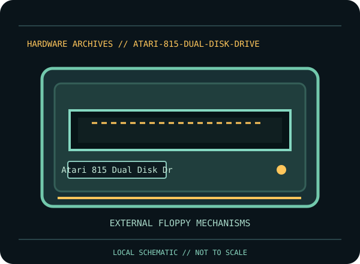

[ INDIVIDUAL COMPONENT // FLOPPY DRIVES ]
Atari 815 Dual Disk Drive
This record identifies a documented physical floppy drive, controller, or preservation interface. It separates confirmed model facts from details that vary by suffix, board revision, host, media and configuration.

IDENTIFICATION NOTE: Match the full model/part number, revision, connector and manual before use. Similar family names do not establish interchangeable mechanics or host compatibility.
Model specifications
| Catalog subcategory | External floppy mechanisms |
|---|---|
| Exact model / family | Atari 815 Dual Disk Drive |
| Era / product family | Atari 8-bit computer peripheral, early 1980s |
| Documented characteristics | Two enclosed 5.25-inch floppy mechanisms; Atari’s operator manual identifies a built-in 6507 microprocessor as the disk controller/interface. The manual specifies 40 tracks and 18 sectors per diskette and describes 368K bytes total across two diskettes. |
| Interface / connectors | Two identical rear I/O jacks connect the drive to an Atari 400/800 console or another Atari peripheral with Atari I/O data cords; the operator’s manual permits either jack and daisy-chaining. |
| Host and media compatibility | Manual-documented host family is Atari 400 and Atari 800. The 815’s double-density format and sector layout differ from the 810 single-density drive; do not assume every Atari DOS or third-party disk image is compatible. |
Model-specific compatibility checks
- Identify the complete model/suffix, board revision, serial/date codes and connector arrangement from the physical unit; photograph all labels before installation.
- Manual-documented host family is Atari 400 and Atari 800. The 815’s double-density format and sector layout differ from the 810 single-density drive; do not assume every Atari DOS or third-party disk image is compatible.
- Confirm the host controller, drive wiring, power, drive select, termination, media density and recording format against the cited model documentation. Do not infer a fit or capacity solely from the drive size or connector shape.
Preservation and service notes
Use the model-specific operator manual for connections and operating sequence. The original 815 uses an internal controller, so it is not a bare 34-pin PC mechanism. Record drive-select switch positions, I/O cable chain, diskette type, and observed reads before servicing. Preserve the twin mechanisms as a matched unit unless the manual and board markings support a repair.
Keep original media and raw captures intact. Log the exact drive/controller/software configuration, acquisition date, condition and any service performed; checksum verified copies before creating derivatives.
Manufacturer documentation & sources
- Atari — 815 Dual Disk Drive Operator’s ManualManufacturer-issued operating and technical reference: host connection, dual-drive design, diskette layout, controller and care guidance.
Sources are model-specific manufacturer documentation or archival copies of the original source. Where a document covers a family or multiple revisions, confirm its applicability to the exact unit before using an electrical or service specification.